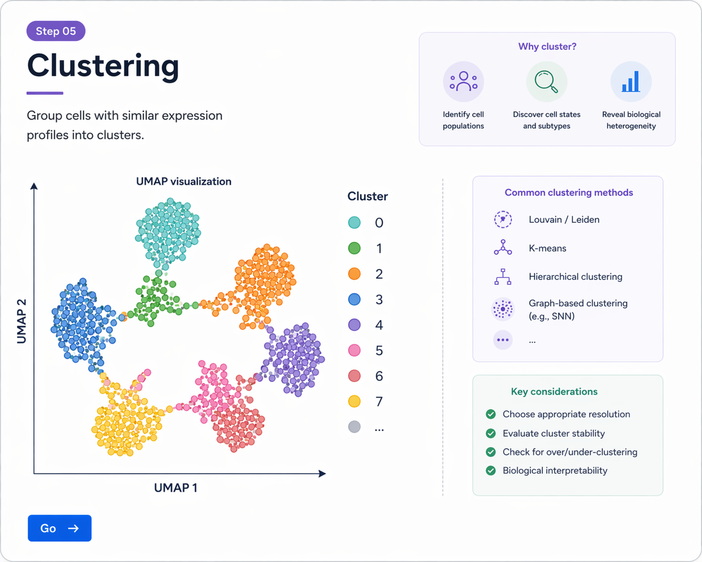

정규화 및 feature selection 이후에는 고차원 유전자 발현 데이터를 차원축소하여 구조를 요약하고, 세포 간 유사성을 기반으로 clustering을 수행합니다.
PCA는 가장 먼저 수행하는 차원축소 단계로, 주요 variation을 설명하는 축을 생성합니다.
obj <- RunPCA(obj, features = VariableFeatures(object = obj))
print(obj[["pca"]], dims = 1:5, nfeatures = 5)
VizDimLoadings(obj, dims = 1:2, reduction = "pca")
DimPlot(obj, reduction = "pca")
downstream 분석에 사용할 principal components 수를 정하는 것은 중요합니다. 보통 Elbow plot을 참고하여 적절한 차원을 선택합니다.
ElbowPlot(obj)
Seurat clustering은 세포 간 최근접 이웃(nearest neighbors)을 기반으로 graph를 만든 뒤, 이 graph에서 community를 찾는 방식입니다.
obj <- FindNeighbors(obj, dims = 1:20)
FindClusters 함수는 neighbor graph에서 cluster를 찾습니다. 이때 resolution 값이 cluster granularity에 큰 영향을 줍니다.
obj <- FindClusters(obj, resolution = 0.5)
| resolution | 해석 |
|---|---|
| 낮음 (예: 0.2) | cluster 수가 적고, 더 큰 집단으로 묶이는 경향이 있습니다. |
| 중간 (예: 0.5~0.8) | 실무에서 자주 쓰이는 범위이며, 데이터에 따라 적절한 구분을 제공합니다. |
| 높음 (예: 1.0 이상) | cluster 수가 많아지고 세분화되지만, 과도한 분할(over-clustering)이 생길 수 있습니다. |
UMAP은 PCA 공간을 바탕으로 세포를 2차원에 배치하여 cluster 구조를 시각화합니다.
obj <- RunUMAP(obj, dims = 1:20)
DimPlot(obj, reduction = "umap", label = TRUE)

PCA와 UMAP을 통해 세포 분포를 요약하고, neighbor graph 기반 clustering으로 세포 집단을 탐색할 수 있습니다.
resolution 값에 따라 cluster 수와 세분화 정도가 달라지므로, 여러 값을 비교해보는 것이 좋습니다.
obj <- FindClusters(obj, resolution = c(0.2, 0.5, 0.8, 1.0))
head(obj@meta.data)
이후 metadata에 여러 resolution 결과가 저장되며, 원하는 값을 선택해서 사용할 수 있습니다.
# PCA
obj <- RunPCA(obj, features = VariableFeatures(object = obj))
# PC 선택 참고
ElbowPlot(obj)
# neighbor graph
obj <- FindNeighbors(obj, dims = 1:20)
# clustering
obj <- FindClusters(obj, resolution = 0.5)
# UMAP
obj <- RunUMAP(obj, dims = 1:20)
# visualization
DimPlot(obj, reduction = "umap", label = TRUE)